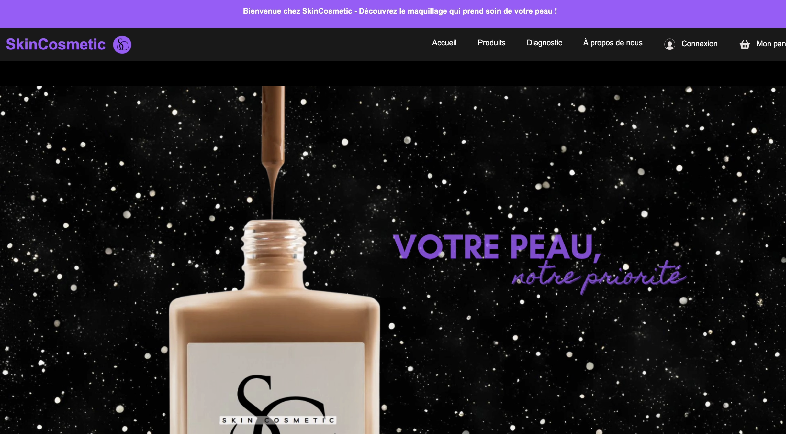

Projet en Binôme
Site Marchand SkinCosmetic
Novembre 2024 — Avril 2025Projet Académique BTS SIO SLAM

Contexte & Collaboration
Simulation professionnelle d'une boutique en ligne de cosmétiques réalisée en équipe. Ce projet nous a permis d'appréhender la gestion d'un projet web complet, de la conception de la base de données jusqu'à la mise en place d'un tunnel d'achat fonctionnel.
Besoins Fonctionnels
- Interface d'accueil vitrine élégante et moderne.
- Gestion dynamique du catalogue (PHP / MySQL).
- Système de panier et gestion des commandes.
- Espace client sécurisé (Inscription / Connexion).
- Back-office pour la gestion des produits et des utilisateurs.
Technologies & Outils
 HTML5 / CSS3
HTML5 / CSS3
 PHP (PDO)
PHP (PDO)
 JavaScript
JavaScript
 MySQL
MySQL
 VS Code
VS Code
 Modélisation
Modélisation
Réalisation du projet
Phase Collective
Définition du cahier des charges, modélisation conceptuelle des données (MCD) et établissement de la charte graphique commune.
Phase Individuelle (Mon Rôle)
Développement intégral du moteur de commandes : logique métier du panier, requêtes SQL préparées et sécurisation des formulaires.
Bilan et Compétences
- Maîtrise de la liaison Base de Données / Front-end.
- Implémentation de bonnes pratiques de sécurité (chiffrement, requêtes préparées).
- Expérience concrète du travail collaboratif et de la répartition des tâches.